Yoko Taro n’ayant pas participer a la conception de Drakengard 2 pour beaucoup celui-ci ne fait pas partie des jeux DrakeNier pourtant, il existe bien. Drakengard 2 est un beat them all sorti sur PlayStation 2 en 2005 (au Japon), édité par TakeTwo et par Square Enix, développé par Cavia.
Prologue
À l'époque où le pouvoir était maître de tout, l'Union et l'Empire luttèrent avec acharnement pour accaparer les sceaux et, ce faisant, manquèrent d'anéantir un monde paisible. Un des soldats de l'Union s'appelait Caim. Il aurait tout fait pour protéger sa sœur, que l'Église avait récemment désignée comme étant la "Déesse" et le symbole des sceaux. Pendant un combat, Caim rencontra Angelus, le dragon rouge qui avait été capturé par l'Empire. Réalisant qu'ils avaient besoin l'un de l'autre, ils joignirent leurs âmes en concluant un pacte. Dès lors, Caim et Angelus combattirent vaillamment afin de protéger la déesse Furiae. Pourtant, malgré leur courage, le dernier sceau fut brisé, entraînant ainsi la fin du monde.
La cause de la destruction du monde était une petite fille de six ans. Privée de l'amour de sa mère, elle était une enfant triste qui ne pouvait se raccrocher qu'aux dieux. Elle s'appelait Manah.
Après avoir combattu en d'innombrables occasions et avoir sacrifié trop de vies, le dernier combat prit fin. Cependant, pour préserver la paix fragile qui suivit, il fut nécessaire de créer de nouveaux sceaux. Ayant finalement compris, grâce à Caim, les secrets du cœur humain, le dragon rouge sacrifia son corps aux nouveaux sceaux afin de sauver le monde du chaos. Caim, son âme déchirée par la perte d'Angelus, versa une larme pour la première fois… Caim et son dragon Angelus ont donc sauvé le monde.
Ces évènements remontent à 18 ans.
18 ans plus tard…
Verdelet, un des héros de la guerre des sceaux, créa l'Ordre des Chevaliers des Sceaux pour s'assurer que le sceau d'Angelus ne serait jamais brisé. Cinq sceaux retiennent le dragon rouge, l'ultime rempart contre la destruction. L'Ordre des Sceaux est chargé de leur protection. Chaque sceau est sous la responsabilité d'un gardien, membre d'élite de l'Ordre. Aujourd'hui, une nouvelle recrue intègre ce corps prestigieux. Un jeune homme élevé par un dragon bleu. Nowe est son nom.